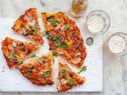

Clark Homemade Pizza

Description
This pizza take several hours to make from hand, but the quality is incomparable.
Through lots of testing of pizza doughs and sauce recipes, the Clarks have perfected their homemade pizza recipe, including the perfect topping combination.
The winning combination of toppings includes sundried tomatoes, red onion, and mushrooms.
Ingredients
Crust
- 2 cups flour
- 1/2 tsp kosher salt
- 1 packet fast rising yeast
- 1/2 cup hot water
- 1/2 cup milk
Sauce
- 6 oz tomato paste
- 1/3 cup olive oil
- 2 cloves garlic minced
- 1/4 tsp rosemary
- 1/4 tsp thyme
- 1/2 tsp oregano
- 1/2 tsp basil
- 1 pinch red pepper flakes
- 1/2 tsp salt
- black pepper
- 1/2 tsp honey
Toppings
- Tillamook mozzarella cheese
- 8 oz baby bella mushrooms sliced
- 1/4 cup sun-dried tomatoes
- 1/2 red onion sliced
Steps
Make the pizza dough
- Combine together the ingredients for the crust (except for the flour)
- Let stand for 5 minutes
- Knead in flour for 8 minutes
- Cover and let rest 1 hour (or until doubled)
Make the sauce
- While the dough is rising, make sauce. Add the oil to the pan.
- Once the oil is hot, add the spices and garlic to the pan to toast them. Be careful to not let them burn!
- Add tomato paste and mix until smooth.
- If softer pizza toppings are desired, sautee in the pan for 3-4 minutes, or until onion is transulucent.
Assemble Pizza
- Set oven to 450 degrees Farenheit
- Once the dough has risen, roll out into a circle wide enough for your pan.
- Use your hands to roll and twist the edges of the dough to create the pizza crust.
- Brush the crust with excess oil from your sauce.
- Spread sauce onto the dough and sprinkle on the entire package of Tillamook cheese.
- Put remaining toppings on.
- Bake in 450 degree oven for 10-12 minutes, or until cheese is melted and crust is golden brown.